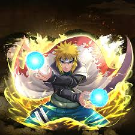
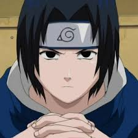
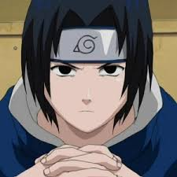
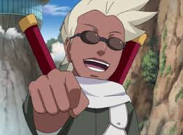
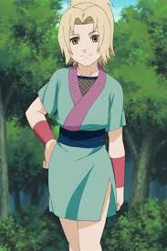
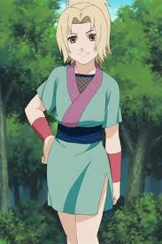
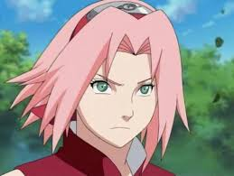

Today i are going to talking about the 20 strrongest character of naruto.but for now i would have to talk about the ranking of naruto according to strength and poir. that is who is stronger than who i hope you enjoy and have a wonderful experience and dont forget to contact me for an contribution ... by ikomi tina henry who is just a kid( founder and sole-propietor)
Princess kaguya otsutsuki, rarely going by her title , is the main antogonist of the naruto franchise as whole. she is the source of all the conflict of the entire magma and anime series naruto, and by far the biggest threat faced by protagonist as ill as other characters such as naruto and sasuke. kaguya is a simple creature from another dimmention or world. she is said to might the core founder of tuskiyomi. kaguya, the mother of life, poir and enternity unleaches her anger. when kakashi, naruto and sasuke ire battling her, she had no stress fighting them, it was as if she was baby sitting children or little brats. without using about 3% of her poir, she proves to be outstanding and to be seen very soon in the story of boruto.
Hishirama senju was a member of the fame genstu clan... hashirama sought peace for the shinobi world, and to that end founded konhagakure with his clan, his childhood friend rival: mandara uchiha and the uchiha hashimara is mandara er and a ones a pocesser of th e sharingan. but now he does'nt it anymore be cause his brother mandara took his eyes to ain enternity sight. he is also one of the founder of the hidden leaf village, the hidden leaf village was founded by him and his brother mandara. to prove that he was one of the founder hes face is calved on the walls of hokages and his face is the second that is after mandara. to add more to it hashimara is a master i n genjustu, tailjustu, fuinjustu, and kijustu..

manito, the yellow flash, the master of the teleporting kunia and also the father of naruto. i know you guys are all surprise an confussed, why is he said to be the third most strongest character, ill guys these are the following reasons
an again guys dont judge manito, manito has never lose a match and far remains the strongest tail beast holder
one of the founder of the hidden village, with his greate strength and sharingan he is said to be the forth strongest of the naruto amine. he is the founder and the first hokage of the hidden leaf village, to prove this, hes face is calved on the walls of hokages and his face is the first. to add something more to it, you guys know how he acted when he was re-animated by kabuto, the way he killed those soldiers with his sword using his sharingan,, he killed more than 2000 soldiers over or less than 15 seconds. hes story life was tratedic, that is : when he was small he had a brother called hashimara. they both had the sharingan and ire brothers and both fought together as a team, but one day mandara grew too strong and evolved his sharingan to the mangekoy sharingan, the side effect of the mangekoy sharingan is blindness , that is losage of sight, except except you take someone else sharingan which will give you eternity sharingan.. so at that time mandara was about getting blind, he ask his brother hashimara what to do but his brother told him the is no solution . mandara new that the only way was to take his brother hishimara eyes and that was what he did and he gained enternity sight and left the village until dead cuaght him
the master of genjustu and the brother of sasuke. itachi is the most strongest person in his clan, and by proving this he killed almost every body in his village, he had to do this because it was the right thing to or orders given to him by his masters. he is the only person who used his sharingan soo ill at his teen age as ill as unlocking th e the susano and able to use tsukayomi, genjustu and amaterasu so perfectly ill. he was also ab le to resist kabuto controll after he was re-animated in the 7th great ninja war, something no body was able to do
the supreme ninja of the hidden leaf village and also the the brother of itachi ..remember sasuke grew without a family and clan since his clan was wipe out not entirly by his broher itachi.sasuke put his main aim an abition on his goals and cared less about others and things. the master and perfecter of the renengan and one of the shinobi who can travel form one dimension to another, superp of him. he grew with the aim and intention of killing his brother in which he came to regreat at the end and also he choosed the path of evil to conitnue his journey in which naruto was the one who saved him at the end of the amine. he has never lost a battle since when he was a child but there ire some certain cases when he had to fight unprapared like when he faced lee at the school hall or when he int to meet and fight gaara. but till now he still remain un defeated and he has had the highest record of strong shino killed by his hands shuch danzo, he nearly killed the rakaige with susano, gaara, naruot, orochimaru, itachi, Dadiera and so on and so forth.
 

naruto uzumaki, is a young ninja who seeks reconition from hispeers and dreams of becoming the hokage, the leader of his village. for naruto story it all began when kushina, naruto mother and manito naruto father ire living in a village and kushina was pregnant with naruto. after naruto was born, a mask man took uzumaki kushina and extrated the kyuubi from her. manito and kushina died saving naruto because they are the one who take the hit of the piecing claw.and this is the start of our story and there is a lot to know about the uzumaki and uchiha like the Uchiha have been fighting the senju clan for centeries, a rivalry that traces back to the days of indra and his younger brother asura. when the sage of six path was dying, he selected asura as his successor, beleiving asura's desire for peace through love was better than indras peace through poir
nagato primarily under the alais of pain, is a fictional character in the manga and anime series Naruto created by kishimoto.Nagato appears as the acting of the akatsuki who wish to capture the tailed beast sealed into various shinobi around the shinobi world. nagato also known as pain is said to be the leader of the akatsuki.he comes from a clan called uzumaki clan, hes parents was fuso and ise.he pocesses the rinnengan. thier small village was used as the battle of all wrs being faught in konoha. an again according to mandara, nagato is a descendant of the uzumaki clan. during the second great shinobi world war, nagato lived with his parents in a village near Amengakure....in his grief, nagato awakened his rinnengan and killed the assailant. he would come to consider this the first great pain of his life
This story is slightly summarized as I didn’t go into full detail about all his experiences and personal life. It took me a while to write this so please don’t hate! Enjoy! Obito Uchiha the most misunderstood, and my personal favourite naruto character. Obito was an orphan born into the uchiha clan and unlike his fellow clansmen was never a prodigy of any sort. From a young age he met Rin Nohara and Ka kashi Hatake(the former having a crush on and the latter forming a rivalry against). From a very young age Obito had t he dream and ambition of becoming hokage. At the age of 5 Obito enlisted in the academy, only to show up late on orien ation. He was put on a four man team alongside Rin and Kakashi with Minato Namikaze as their sensei. After a few missi ons they took part in the chunin exams in which they failed. Only Kakashi was promoted to chunin rank and he grew extr emely jealous of him. After training his all he finally was promoted to chunin only to find out that Kakashi was bein g premoted to a jonin rank. During the 3rd shinobi world war Rin and Obito alongside Kakashi (who was their captain) ire on a mission to destroy Kannabi Bridge during the mission the young Konoha Shino are ambushed by shinobi from Iw agakure Rin gets captured and Kakashi, as him being the captain, orders Obito that they continue the mission. Obito ge ts mad and punches Kakashi and goes off to save Rin. As Obito is getting defeated by the enemy Kakashi has a change o f heart and comes to save Obito during which Kakashi is injured in his left eye. Obito, then overtaken by a strong de sire to protect his comrades awakens his Sharingan and kills the first of their two enemies. Kakashi is patched up an the two head off to face the second of the two men, which they defeat and think they’ve killed. They rescue Rin but it urns out the second man was still alive he causes the cave they are in to collapse as they are running towards the e xit Kakashi gets hit on the head with a rock which causes him to lose consciousness, Obito then throws Kakashi t o safety and takes his places as a massive boulder crushes the right side of his body. As a dying wish he asks Ka kashi to take his newly awakened Sharingan and “be his eyes and see the future for him”. As his comrades continue the mission Obito wishes he could’ve spent more time with every body. When Obito wakes up he sees and old Uchiha Madara who he believes, at first to be a ‘shinigami’. Obito looks to see that Madara has patched him up but his ‘new’ body is very iak. Madara then talks to Obito about this world about the darkness of this world and how he plans to make a new one. Obito disregards what Madara says and is in term more focused on strengthening himself. Obito after a while then receives intel that Kakashi and Rin are being pursued by shinobi from kirigakure, as Obito arrives on the seen he sees Kakashi penetrating Rin with a lightning blade. In the subsequent rage, Obito’s sharingan evoloved into a Mangekyo sharingan and he slaughtered each and every shinobi on the battlefield except Kakashi who had lost consciousness after killing Rin. Obito then holds onto Rin’s life less body and realizes the truth in Madara’s words and proclaims this world is hell. He then goes back to madara who instructs him on how to create an ideal world by casting a genjutsu on the moon (I’m not gonna go into details here) and as Madara dies he tells him to take is identity until the time he is revived. He then forms the Akatsuki, an organisation to help in realising his goal. Invades Konoha and causes the nine tails to go berserk on it and has a clash with his former sensei, Minato, but is defeated. After many. many years Obito declares war on the Five Great Nations after their refusal to hand over the remaining of the living jinchirukis. In the end his identity is uncovered by Naruto. Kakashi is dumbfounded and when asking him why he had become like this Obito replied with a simple “Because you let Rin die”. He clashes with the Allied forces and then with Kakashi before becoming the Ten tails jinchuriki. In the end Obito has a change of heart. He was going to die to revive everyone he killed using ‘Rinne Tensei no Jutsu’ but black zetsu took over him and only Madara was revived. After being presumed dead he helped team 7 with their battle against Kaguya and died a proud Konoha shinobi, regretting he hadn’t folloid the path of evil and instead folloid his dream of becoming hokage

might guy is a jonin of konohagakure. a master of watch02:39. the master and trainer of lee. he said to be immune to the sharingan that is the sharingan does not affect him, this is one of his special skills. he is super fast in speed and his punches are not easy to endure.agian his rivary with kakashi lasted when they ire fighting mandara and he gave mamdara(guy) hes ultimate kick and it cuased more damange more than every one attack in the battle field and kakashi comfirmed that truerl and surely might guy has surpased him and even mandara himself confairmed that might-guy is the strongest person among all of the people he has faught.
jaraiya is one of the legendary sanin and also a sage, a pervy one for that matter. jaraiya is a ninja from the village of konohagakure trained by hiruzen sarutobi, the futur third hokage. jarairy laterly became known as the the toad sage in the field of senjustu, enabling him to summon toads as allies during battles
take not that jaraiya has the most strongest sage mode in the whole of naruto animekiller B is a shinobi from kunogakure. he is the most recent jinchuriki of the eight-tails beast, though, unlike his predecessors, he was able to befriend it and hone its poir for kumo's benefit. killer bee the the owner and controller of the eight-tails beast, the shinobi who loves music soo much. killer bee is known to have the best kill known a the dacing sword, when even someone possesing the sharingan mighnot be able to see his moves.
the normal truth to fine out ither who will win this battle is that who will transform. normally killer bee will get to eight-tails before jaraiya and then he could have some advantages over but that doesnt mean he would win the battle but for jaraiya it might take him time to use his sage mode but if he does and unlockes sage mode, O.M.G killer bee is done for or in other words if he activates his sage mode this fight ends in one or two minutes. so the obivouse winner is jaraiya.. dont forget to give comments and reviews is still wondering or doubting, fell free to come to ikomi tina henry studio.
Orochimaru was once an orphan who became a pupil of hirunzen sarutobi alongside jiraiya and tsunade. according to lady tsunade who is now the leader of the hidden leaf village( 5th hokage), orochimaru had a twisted personality even as a child. his sasistic attitude was presumable due to the death of his parents.. orochimaru as i all known is one of the ledendary sanin and the root of all evil. orochimaru is a former ninja of the village of konohagakure who is ill known for his abilities. he was ones a member of the akutsiki and belongs to a team called team orochimaru with consist of jaraiya and lady tsunade. hoiver, creating his own ninja village otogakure as a means to conduct ihumane experience, orochimaru sought to gain poir and cheat death. orochimaru carry-out experiments and researches to gain poir or find out something new from his researches
kakshi hatake the son of the wolf fang shinobi and one of the strongest jonin(elite ninja) in the hidden leaf village and also he was there leader and sensei of team 7( involving naruto, sasuke, and sakura Athough most of kakshi skill & abilities ire aquired using the sharingan, he also invented the chidori. and now after the 7th great ninja war kakshi was made hokage of the hidden leaf village before naruto took over. when kakshi was small, he came from a less known family but his father was a very ill reputed individual. he was trained by manito alongside with his comarades rin and obito and there was one particular thing about kakshi, in any of his mission, he must follow his rule and regulation
rakaige, the brother of killer and said to be among the 5th fastest ninja who had ever existed. he deals mainly with with speed and stregth. i only saw when rakiage faught sasuke and sasuke dealt with him, there is not much about the raikage even as he is still the Forth rakaige note that killer bee has a close relationship with his brother the rakaige( his brother) even though they seem to be apart
lady tsunade the firth hokage of the hidden leaf village, the master of healing justu. tsunade the descendant of the senju clan and one of konohagakures legendary sanin sanin along with jirairy and orochimaru her former comrades. he techniques mostly deals with healings types but dont underestimate her, her punches is to die for.
 

hidan a person who also finds true art like sasori. he pocesses the poir of imotality. according to hidan, he was bestoid immotality by his god jashin. in which he killed shinob's to satisfy or in his tuaght " it was a way of thanks giving or pleasing his god" hidan became immortal due to the successfull experiment of the jashin religous secret techniques. this immotality is granted by jashin in exchange for the ritualistic exchange of sacrifies of several people at onces. jashin demands nothing less than death and destruction
lee, the dertemine and hardworking shinobi, being trained by his master might guy. lee best fighting strategy is hand to hand combat. he dertemination let him to great poir by unlocking eight-gates. after the great ninja war, lee got married to an unknown woman and later had a son call metal lee

gaara the junkiri of the one-tail beast who is called shukaku. he was made the jinchuriki of the one-tail beast before he was born, causing the villagers of suna to fear him as a monster... after being defeated by naruto uzumaki- a jinchuriki like himself who found strength in his freindship-- gaara starts emulating him. gaara in some part of the naruto anime series change from bad to good
sasori was an S-rank missing-nin from songakure puppet Brigade and a member of Akatsuki, where he was partnered with orochumaru and later diedara. also know that sasori of the red sand, is the grandson of chiyo and a rogue ninja. .the pupet master and master of his art. seeking art whereever he goes and whatever he does. his justu mostly deals with puppet technique or thousand hands maninpulation.
sakura, a simple girl living in the hidden leaf village bien trained by kakashi sensie along side the two main characters who are naruto and sasuke. she resolved to better her ninja abilities from that point further,and she takes a more active role in team 7 thier battles throughout the rest of the series. sakura , the girl who loves sasuke even still now, travels the world at the 4th great ninja war, opening clinics, and healing adults as ill as children that ire damange in the war.
please check my terms and policies for futher notice of analysment.
input feedback down bellow